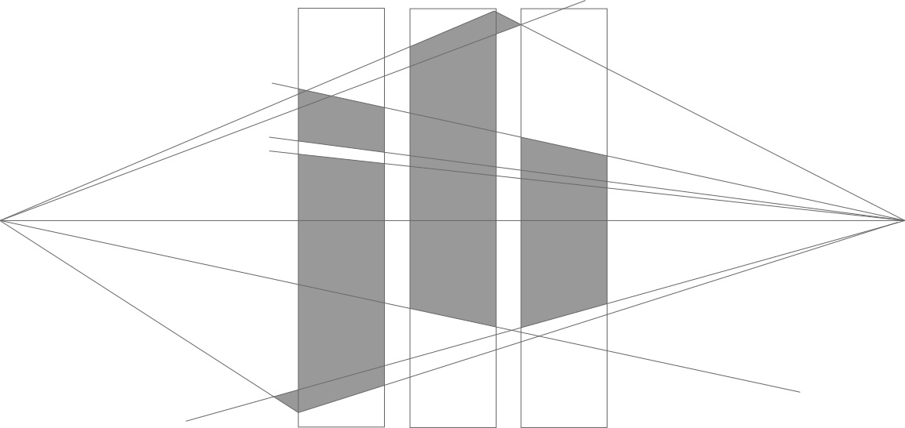
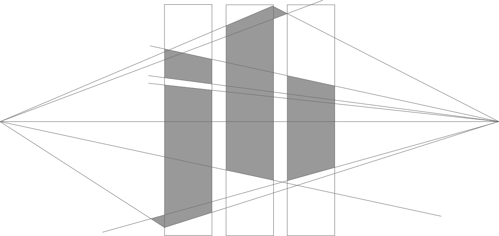

Personal Projects, 2019

This is a UI project I undertook after drawing inspiration from a logo idea I had lying around. I wanted to play around with a golden-ratio-proportioned square arrangement as a landing page, with the squares being able to move and slide as you interacted. The theme direction was influenced by how I thought a magical idea like 'elixir' might work within the constricts of a modern tech company's design guidlines. Click the logo above to explore the site and some notes on my process.
Here is a logo I made for myself, mainly to use as a favicon. I wanted something that drew from the blackletter font I used in my header. In order to make it look better at such a small scale, I reduced as many details as I could while retaining the serifs associated with the style. I created it in Illustator, using a two-point perspective method to keep all the angles consistent and refecenced from the same point, thus making any future tweaks much easier.
I wrote a blog post about my thought process in turning this architecture idea into a sketch and digital deliverable. Click above to read.
New Media Capstone Project, Fall 2018
Amore Pizza is an augmented reality game that utilizes ARKit 2.0 on iOS 12 to create a unique gaming experience. Combining elements of time management games, cooking simulators, and a burgeoning technology in ARKit 2.0, Amore Pizza brings all the fun of local multiplayer games with the added challenge of the playspace being in augmented reality.
I served as the Lead Developer for Amore Pizza, a project that lasted roughly four months. Since I was the sole developer and had no prior experience in Swift, I had to learn a great deal on the fly. I had to assess our goals for what the game would look and feel like at the end of our journey, then research possible solutions in ARKit.
For more info, check out our website.
I served as the Lead Developer for Amore Pizza, a project that lasted roughly four months. Since I was the sole developer and had no prior experience in Swift, I had to learn a great deal on the fly. I had to assess our goals for what the game would look and feel like at the end of our journey, then research possible solutions in ARKit.
For more info, check out our website.
Rich Media Production, Fall 2018
Rabbit Hole was designed (mostly for myself) to use Spotify APIs to allows users to explore the related artists feature more fruitfully. The goal was to replicate the feeling of clicking through hyperlinks in Wikipedia, but in the realm of streaming music.
This iOS app allows user to pick a starting artist and continue from there, accumulating an ever growing chain of related artists along the way. Once satisfied, users can marvel at their list and log in to Spotify to add all of the artists' top tracks to a new playlist on their own Spotify account.
For further explanation, I recorded an informal walkthrough of the app in simulator.
This iOS app allows user to pick a starting artist and continue from there, accumulating an ever growing chain of related artists along the way. Once satisfied, users can marvel at their list and log in to Spotify to add all of the artists' top tracks to a new playlist on their own Spotify account.
For further explanation, I recorded an informal walkthrough of the app in simulator.
Projects from New Media Design at UGA, Spring 2018
Jankivelliis a portmanteau of the client's name and Machiavelli (noted Italian diplomat and author of The Prince). The existing jankivelli website features a lot of black, so hollow logo with a bright base seemed fitting. I used The Prince as the inspiration for the crown. For the fonts, I wanted to give the client's name a bold, youthful sans-serif, and a script seemed appropriate for the latter half of the brand name, embodying pomp and circumstance. The shape and style of the crown was inspired by graffiti, with no fill and minimal intricacies, to reflect the edge and modernity of the brand. The crown design originally incorporated the the letters J and V, as those seemed to be the most apt initials of the brand. However, the client was concerned over a possible confusion with her initials being J.V. So, the explicit inclusion of the letters was cut in favor of a more subdued curve and dot of a lower case j.

 These two web page mockups were made in Photoshop to update a local restaurant's online presence.
These two web page mockups were made in Photoshop to update a local restaurant's online presence.
This was one of the first website mockups I ever made. The task was tocreate an imaginary client to design for, then execute several page layouts based on their needs. I thought that an orchard would be an interesting client, as they would likely have more rustic design preferences. I went for off-white cards as the primary layout, reminiscent of labels on apple baskets and jam jars, and used a blurred background to add depth and give a reference point for the horizontal style page arrangement.
This is a font I made in Sketch called Bonair. The name Bonair is an homage to my hometown of Bonaire, Georgia,
which I always thought meant
good airin French, but actually means
good area.Bonair is centered around having a 2 degree slanted line in every character possible, so they're not quite italicized, just blowing in a gentle breeze (hence Bonair). The forms are inspired by some of my favorite fonts, like Montserrat and Effra. The font also borrows from architect styles of handwriting, as well as my own. Though it is geometric, the off-centered angles and drawn-form curves give this text font some hometown charm.
Below are two mockups, a desktop and mobile version, of a fictional brand's site. This was my contribution to a larger group project to create a comprehensive branding portfolio for an imagined app.


Photography


Human - Computer Interaction, Spring 2018
© Jordan Buice 2020

